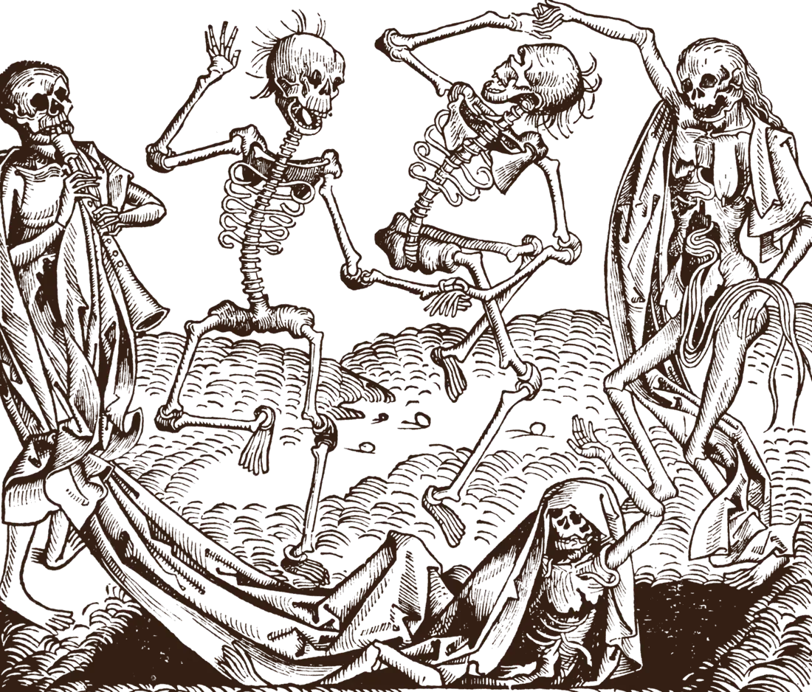
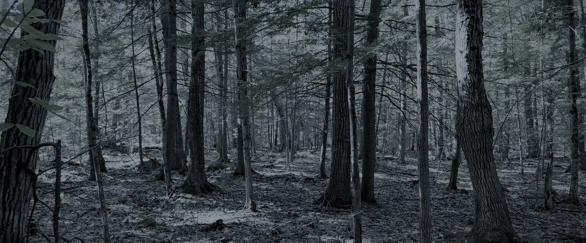
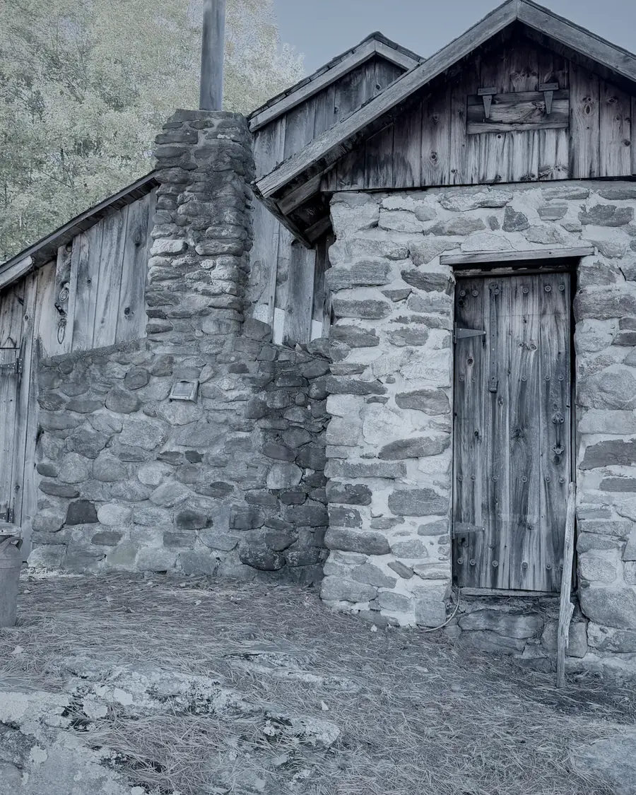
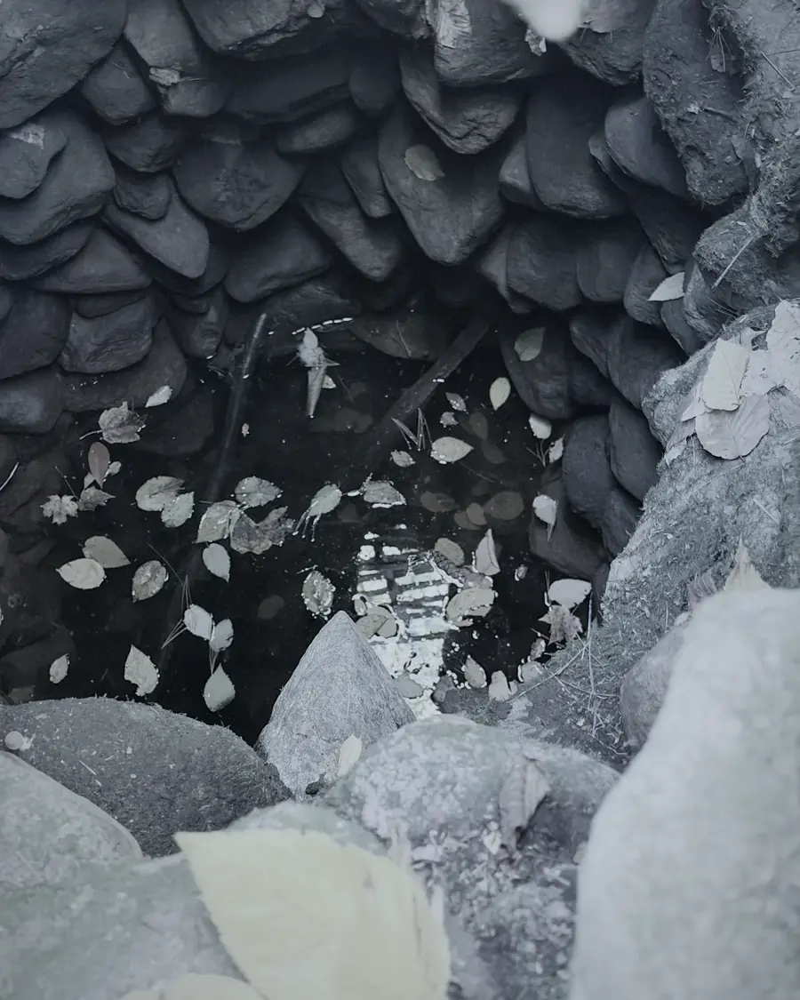
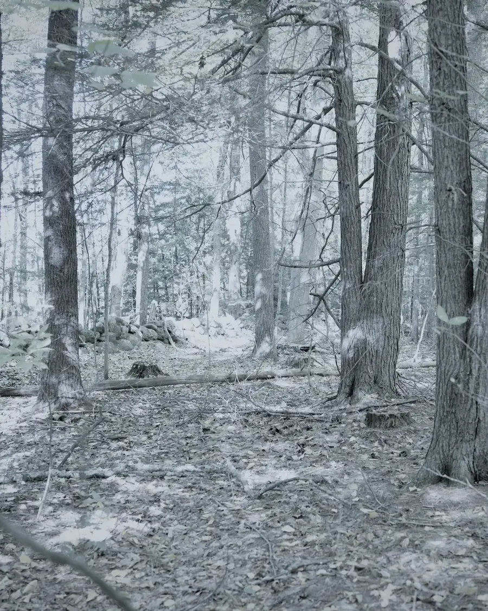
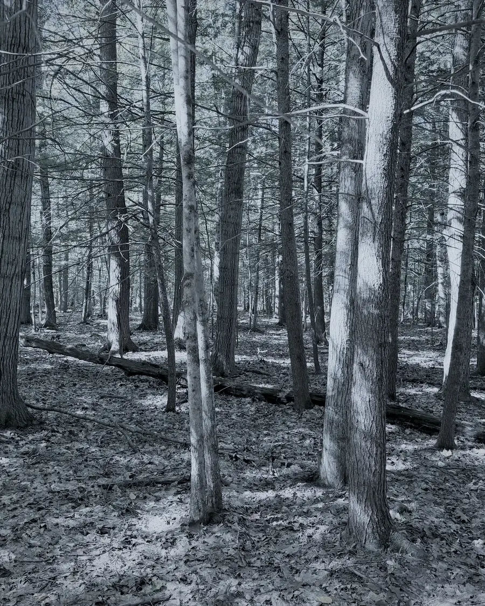

Includes $4,000 raised before our GoFundMe launched


1348
Famine, war, and now plague scar the land.
When the dead start to rise, everyone believes the apocalypse has arrived. But are these returned souls controlled by the Devil, or a sign from God?
The fir woods, scouted for the film
¶The Story
Isabel, a 16-year-old villager, has visions of her recently deceased mother’s soul burning in Hell, and is desperately praying for a way to save her. When the local priest offers a way to save the village from the raised dead and her mother’s soul, Isabel finds herself barreling down a path of martyrdom. But when she volunteers for death, her father will unleash a catastrophe that may kill dozens just to keep her safe.
What is the right way to love someone?
A story of love, grief, faith and sacrifice, and the terrible things we do to protect the people we love.
During my time at Emerson, I have specialized in telling stories through movement and fight. From fight direction in theater, to stunt performance and choreography in student films, and directing dance music videos, I’ve developed a passion for telling stories of narrative violence and physicality.
Many filmmakers my age don’t have the resources or experience to take on such a fight-heavy period piece. I believe I can, and just as importantly balance the action with a searingly intimate family drama of loss and love.
Ethan Hewlett, writer and director
Where it will be made
This fall we scouted real New Hampshire locations: old stone, deep woods and forgotten wells, places where the world of 1348 already half exists.

The smokehouse

The well

The stone wall

The fir woods
Scouting photographs by the production, graded toward the look of the film. See the scouting update
Help Us Make It
We’ve already raised $4,000, but as production costs have increased, we’re looking to expand our budget. Here is what your support builds.
Costumes, props and sets
Period clothing, props and set dressing that turn real New Hampshire locations into a village in 1348.
Stunt weapons
Stunt-safe blades and gear for the choreographed fights at the heart of the film.
Blood and gore effects
Practical blood, wounds and makeup for the plague dead, made by hand and caught on camera.
Transportation, catering and rentals
Getting the cast and crew to remote locations, feeding them through long winter shoot days, and renting the equipment the film needs.
¶Filming is planned for December 2026. Help us bring the world of 1348 to life.